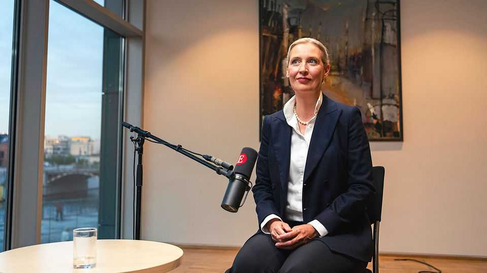
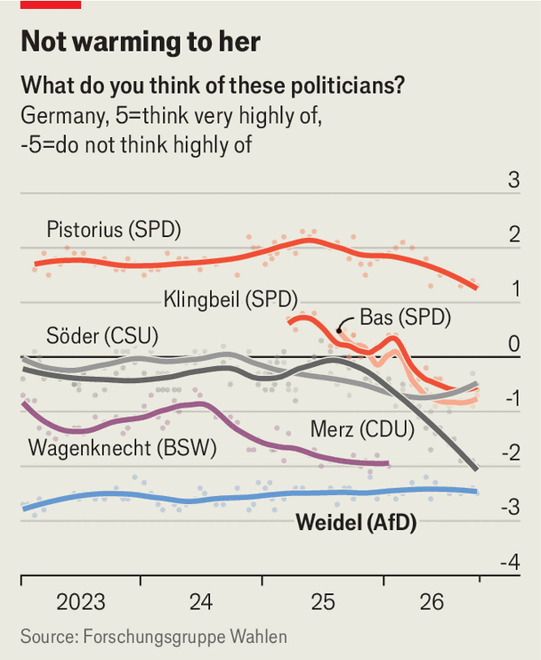

Alice Weidel would pull the plug on German support for Ukraine
The populist-right politician says Ukraine has “already lost” against Russia and should sue for peace

Oct 15th 2026
ALICE WEIDEL, co-leader of Germany’s populist-right Alternative for Germany (afd), has good reason to think her moment has arrived. Her party has opened up a wide polling lead and stands on the cusp of running its first-ever government, in the state of Saxony-Anhalt. In the course of a 75-minute interview for The Insider in a Bundestag meeting room overlooking Berlin’s river Spree (available to watch from 6pm London time), she offers a confident and fluent performance. Nonetheless, working out what Ms Weidel stands for can prove elusive.
What she opposes is clear. Start with German backing for Ukraine’s defence against Vladimir Putin’s invasion. Futile, she says: Ukraine is “too small” and has “already lost”. Germany should apply “pressure on the Ukrainian president” to end the killing. Policy must follow “Germany first” principles, including by emulating Donald Trump’s diesel deal with Russia.
Worse, prolonging the war “endangers Germany” since it could become a target. This is plausible, as Russia’s hybrid attacks on nato allies suggest. And yet Ms Weidel is reluctant to call out Russia as a threat. Germany recently blamed the Kremlin for a failed drone attack at Leipzig airport. But Ms Weidel says she has seen no evidence that Russia was behind this “so-called attempted drone attack”. Anyway, what about the presumed Ukrainian bombing of the Nord Stream gas pipelines?
This rhetorical judo is a habit. Asked for signs that Mr Putin wants peace, Ms Weidel throws the question back: what about Volodymyr Zelensky? She accepts Russia was the aggressor in 2022, but adds, “when diplomacy is at the table, history is sitting there too.” She means that for decades the West ignored Russia’s security concerns, and must stop doing so.
Ms Weidel, a self-styled “libertarian conservative”, fulminates against Germany’s surge in spending, which she says will lead its interest payments to double in three years. Analysts say the afd’s budget proposals do not add up. But Ms Weidel insists that slashing energy subsidies, foreign aid and welfare can pay for tax cuts and debt reduction. She does not include defence, which accounts for the largest share of new borrowing. Indeed, she accepts “we will have to spend more”. But rather than offer details she simply condemns German support for Ukraine.
As for the euro, it is a “myth” that the afd seeks to leave, says Ms Weidel (though its manifesto in last year’s election in effect urged exit). Instead she wants thorough reform such that the European Central Bank stops financing “highly indebted” countries. Marine Le Pen wants “free debt financing, even though France is already in a huge debt crisis”. Europe is “certainly” headed for a bond-market crisis.
Only one question irritates her. Ms Weidel calls the suggestion that the afd harbours extremists “completely unfounded”, although countless party figures have been linked to ethnonationalist or neo-Nazi groups. On “remigration”, a slippery term beloved of the populist right, Ms Weidel says it simply means deporting failed asylum-seekers and the like. Since Syria’s civil war is over, “100% of the Syrian citizens” must return, as must Afghans and the 1m-plus Ukrainians in Germany, once the peace she claims is close takes hold. “Four to five million” will have to go.

“Professionals who want to work here”, by contrast, are welcome. “I love it! Everyone loves it in my party!” exclaims Ms Weidel. So does she disavow her colleagues in Saxony-Anhalt whose recent manifesto railed against “culturally alien skilled workers”? Not at all. Indeed, the foreign workers that Germany should aim to attract are put off by failures of integration.
Behind the bluster lurks a skilled political manager. She forcefully defends Björn Höcke, the afd’s most divisive figure, who has been fined for using a banned Nazi slogan. But she once tried to have him expelled, only to discover he commanded too much support. Ms Weidel has personally failed to capture voters’ affections (see chart). But her ability to pick her battles, suing for peace where necessary, is her most valuable political asset.
Might that extend to other German parties? All mainstream outfits exclude the afd from coalitions under the so-called Brandmauer (firewall) policy. This, Ms Weidel alleges, forces a country that votes for right-wing policies to accept left-wing governments. Yet should the Brandmauer fall, negotiating coalitions would require the afd to compromise, primarily with the centre-right Christian Democrats (cdu). And this is not to Ms Weidel’s taste. “Why should we?” she asks. “On our main points…there are no compromises to be made. The cdu has to move first. And if it doesn’t move quickly, it will perish.” ■
The interview will be available from 6pm London time on The Insider.